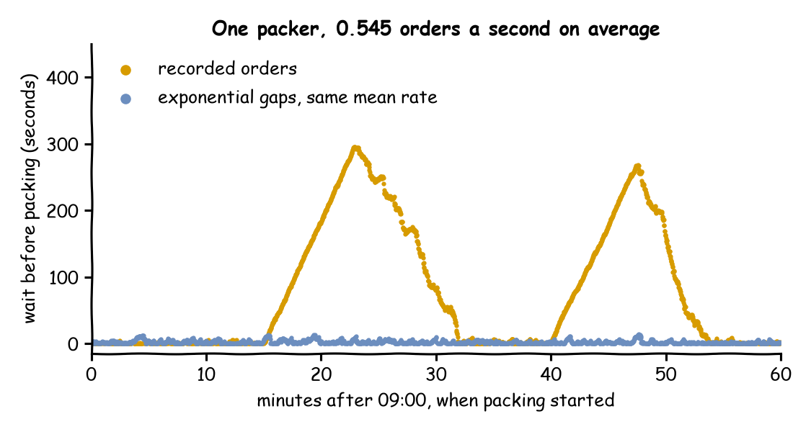

The shop recorded every order of one morning, 09:00 to 10:00 on 1 October 2026: 1,963 orders, one every 1.83 seconds on average (33 a minute). A model with exponential gaps at that rate says one packer keeps waits short. This page asks: what does the shop do with the same orders, at the times they were really placed?
Decision: whether one packer is enough for that morning.
Measures: the mean and the longest wait.
Runs: one replay of the recorded hour, and one run of the model with exponential gaps at the same mean rate and the seed 42, each from an order's arrival to the end of its packing.
Assumptions: every order takes the same time to pack.
What You Will Learn
This page shows how to:
replay the arrivals recorded in a file at their recorded times;
compare the replay with a model that has the same mean rate;
see what a mean rate leaves out.
What You Add
This page adds a replayed arrival: arrivals taken from the rows of a file instead of a distribution. The shop is the one from First Simulation, with packing at a constant 1.5 seconds. The recorded orders are local_replay_orders.csv, one row per order. Save the files from Full Files in one folder and run the commands there. Download the recorded orders into the same folder:
Each row becomes one arrival at its time, and the fields named in fields become the order's attributes. unit says what the time column holds. It is ms, s, min or h from the start of the run, or timestamp, a date and time. A timestamp is placed on the run's clock from its logical_start_time, here 09:00 on the recorded day:
arrivals:orders:# Each row is one order, at its recorded time, carrying its order_id and itemsreplay:path:local_replay_orders.csvtime:ordered_atunit:timestampfields:[order_id,items]# A row without a valid time is left out, with a warning naming iton_invalid:skipspawn:pack_order
# Each row is one order, at its recorded time, carrying its order_id and itemsapp.add_arrival_replay("orders",TRACE,time="ordered_at",unit="timestamp",fields=["order_id","items"],# A row without a valid time is left out, with a warning naming iton_invalid="skip",)
The source can also be a list of dicts. The arrival loop is written as for any other arrival:
@app.arrival_loop("orders")deforder_generator(context:SimulationContext):task_id=0whileTrue:# The wait for the next row, as for any other arrivalorder=yieldcontext.wait_for_arrival("orders")context.spawn(pack_order(task_id,entity=order))task_id+=1
defreplayed_orders(env,sampler,packers):"""Starts one order at each row's time, carrying its order_id and items."""rows=read_trace(TRACE,time="ordered_at",unit="timestamp",fields=["order_id","items"],# A row without a valid time is left out, with a warning naming iton_invalid="skip",start=START,)fortask_id,rowinenumerate(rows):# A row at or after the end of the run never arrivesyieldenv.timeout(row.time-env.now)key=f"orders-{task_id+1}"env.process(pack_order(env,sampler,packers,key,task_id,row.fields))
read_trace reads and checks the rows. Each row has its simulation time, its row number and its fields.
The rows are read and checked when the run starts, by the rules that Replay lists. In the morning's file, times are given to a tenth of a second, so 74 rows have the same time as the row above them. Rows with the same time arrive in the order of the file. The 19 orders after 10:00 are at or after until, so they never arrive. Row 501 has no time, and on_invalid: skip leaves it out with a warning:
Skipped row 501, which has no valid ordered_at: ''
A Parquet file works the same way and needs the parquet extra.
What You Get and Why
What does the shop do with the orders of the real morning? The replay shows something the model does not. Replayed, the orders wait 91.31 seconds on average and up to 295.40 seconds. In one run of the model, with exponential gaps at the same mean rate and the seed 42, orders wait 2.57 seconds on average and at most 14.34. The recorded morning holds two bursts of three minutes each, at 09:15 and 09:40. The packer clears the queue of the first burst only at about 09:32, and the queue of the second at about 09:54:

The replay packs 1,962 of the 1,963 recorded orders: the last is still being packed when the hour ends, and flows.orders.in_system is 1.
Each tab prints both runs: the orders packed, the mean wait and the longest wait.
The second run is the model. Copy local_replay.yaml to local_replay_modelled.yaml, and replace its replay: block with dist: exponential and rate: 0.545, an order every 1.83 seconds on average.
# The recorded orders: orders packed, mean wait and longest waitdesflowrunlocal_replay.yaml--stdout|grep-E'pack_order\.(finished|wait_mean|wait_max)"'|tail-3
# The modelled ordersdesflowrunlocal_replay_modelled.yaml--stdout|grep-E'pack_order\.(finished|wait_mean|wait_max)"'|tail-3
recorded: 1962 packed, mean wait 91.31 s, longest 295.40 s
modelled: 1905 packed, mean wait 2.57 s, longest 14.34 s
A mean rate says how many orders come in an hour, not when they come. Exponential gaps spread the orders evenly over the hour, with small random clusters. The recorded morning has bursts that push the load above what one packer can pack for minutes at a time: a finite overload, like the rush of Changing Demand. Replaying the recorded rows keeps the bursts, so it shows waits the fitted model cannot. Use a replay to check a model against the data it was fitted to, as Checking and Validating describes. When the two disagree, the arrivals are not exponential at one rate, and the model needs a schedule, as on Vary Arrivals by Time, or the replay itself.
Key Takeaways
A replay keeps when the orders came, not only how many came.
Bursts in real data can overload a resource for minutes, which a model with exponential gaps at the mean rate does not show.
When a replay and a model disagree, the arrivals need a schedule, or the replay itself.
# The Local Replay tutorial: a recorded morning of orders, at their recorded times.# Run it with: desflow run local_replay.yamlsimulation:sim_id:Shopfactor:0random_seed:42# Simulation time 0 is 09:00 on the recorded daylogical_start_time:2026-10-01T09:00:00resources:packers:{current_cap:1, max_cap:2}services:packing:{dist:constant, value:1.5 s}arrivals:orders:# Each row is one order, at its recorded time, carrying its order_id and itemsreplay:path:local_replay_orders.csvtime:ordered_atunit:timestampfields:[order_id,items]# A row without a valid time is left out, with a warning naming iton_invalid:skipspawn:pack_ordertasks:pack_order:service:packingresource:packerspayload:{event_type:order_packed}# Orders packed, and the mean and longest wait, at the endstats:{level:typical, interval:2 h}egress:-type:Consolerun:until:1 h
"""The Local Replay tutorial: a recorded morning of orders, against a model of it.One packer and 1.5 seconds of packing. The orders of 09:00 to 10:00 on 1 October 2026arrive at their recorded times from local_replay_orders.csv. A second run drawsexponential gaps at the same mean rate: an order every 1.83 seconds on average (rate0.545). Every record is printed to the terminal, and the script prints the waits of bothruns. To see only those lines, run:python local_replay.py 2>/dev/null"""importloggingfromdatetimeimportdatetimefrompathlibimportPathfromdesflowimportConsoleEgress,SimulationContextlogging.basicConfig(level=logging.INFO,format="%(levelname)s [%(asctime)s] %(message)s")TRACE=Path(__file__).resolve().parent/"local_replay_orders.csv"defshop(replay:bool)->SimulationContext:"""One packer, with the recorded orders or with a model of them."""app=(SimulationContext(sim_id="Shop",factor=0,random_seed=42,# Simulation time 0 is 09:00 on the recorded daylogical_start_time=datetime(2026,10,1,9,0),).add_resource("packers",current_cap=1,max_cap=2).add_service("packing",dist="constant",value=1.5)# Orders packed, and the mean and longest wait, at the end.with_stats("typical",interval=7200).add_egress(ConsoleEgress()))ifreplay:# Each row is one order, at its recorded time, carrying its order_id and itemsapp.add_arrival_replay("orders",TRACE,time="ordered_at",unit="timestamp",fields=["order_id","items"],# A row without a valid time is left out, with a warning naming iton_invalid="skip",)else:# The same mean rate: 1,963 orders in the hourapp.add_arrival("orders",dist="exponential",rate=0.545)@app.task(service_id="packing",resource_id="packers")defpack_order(task_id:int):return{"event_type":"order_packed"}@app.arrival_loop("orders")deforder_generator(context:SimulationContext):task_id=0whileTrue:# The wait for the next row, as for any other arrivalorder=yieldcontext.wait_for_arrival("orders")context.spawn(pack_order(task_id,entity=order))task_id+=1returnappdefoutcomes(replay:bool)->dict:"""Runs the hour and returns the orders packed and their waits."""app=shop(replay)app.run(until="1 h")r=app.env.stats.readings()name="Shop.stats.tasks.pack_order.{}".formatreturn{"finished":r[name("finished")],"wait_mean":r[name("wait_mean")],"wait_max":r[name("wait_max")],}if__name__=="__main__":forreplayin(True,False):r=outcomes(replay)label="recorded"ifreplayelse"modelled"print(f"{label}: {r['finished']} packed, "f"mean wait {r['wait_mean']:5.2f} s, longest {r['wait_max']:6.2f} s")
"""The Local Replay tutorial: a recorded morning of orders, against a model of it.One packer and 1.5 seconds of packing. The orders of 09:00 to 10:00 on 1 October 2026arrive at their recorded times from local_replay_orders.csv. A second run drawsexponential gaps at the same mean rate: an order every 1.83 seconds on average (rate0.545). Every record is printed to the terminal, and the script prints the waits of bothruns. To see only those lines, run:python local_replay_low_level.py 2>/dev/null"""importitertoolsimportloggingfromdatetimeimportdatetimefrompathlibimportPathfromdesflowimport(CapacityConfig,ConsoleEgress,DistributionConfig,DynamicRealtimeEnvironment,DynamicResource,Sampler,SimParameter,read_trace,)logging.basicConfig(level=logging.INFO,format="%(levelname)s [%(asctime)s] %(message)s")TRACE=Path(__file__).resolve().parent/"local_replay_orders.csv"START=datetime(2026,10,1,9,0)# simulation time 0 is 09:00 on the recorded dayPARAMS=SimParameter(sim_id="Shop",# The same mean rate: 1,963 orders in the hourarrival={"orders":DistributionConfig(dist="exponential",rate=0.545)},service={"packing":DistributionConfig(dist="constant",value=1.5)},resources={"packers":CapacityConfig(current_cap=1,max_cap=2)},)defpack_order(env,sampler,packers,key,task_id,fields):path_id="Shop.service.packing"defpublish(value):env.publish_event(key,value,task="pack_order",instance=task_id)publish({"path_id":path_id,"status":"queued"})env.stats.task_queued("pack_order",task_id)withpackers.request()asrequest:yieldrequestpublish({"path_id":path_id,"status":"started"})env.stats.task_started("pack_order",task_id)yieldenv.timeout(sampler.sample(env.registry.get_config(path_id)))publish({"event_type":"order_packed"})env.stats.task_finished("pack_order",task_id)defreplayed_orders(env,sampler,packers):"""Starts one order at each row's time, carrying its order_id and items."""rows=read_trace(TRACE,time="ordered_at",unit="timestamp",fields=["order_id","items"],# A row without a valid time is left out, with a warning naming iton_invalid="skip",start=START,)fortask_id,rowinenumerate(rows):# A row at or after the end of the run never arrivesyieldenv.timeout(row.time-env.now)key=f"orders-{task_id+1}"env.process(pack_order(env,sampler,packers,key,task_id,row.fields))defmodelled_orders(env,sampler,packers):arrival=env.registry.get_config("Shop.arrival.orders")fortask_idinitertools.count():yieldenv.timeout(sampler.sample(arrival))key=f"orders-{task_id+1}"env.process(pack_order(env,sampler,packers,key,task_id,{}))defrun(replay=True,factor=0.0):env=DynamicRealtimeEnvironment(factor=factor,logical_start_time=START)env.registry.register_sim_parameter(PARAMS)env.setup_egress([ConsoleEgress()])# Orders packed, and the mean and longest wait, at the endenv.setup_stats("Shop","typical",interval=7200)packers=DynamicResource(env,"Shop","packers")orders=replayed_ordersifreplayelsemodelled_ordersenv.process(orders(env,Sampler(seed=42),packers))try:env.run(until=3600)finally:env.teardown()returnenvdefoutcomes(replay:bool)->dict:"""Runs the hour and returns the orders packed and their waits."""r=run(replay).stats.readings()name="Shop.stats.tasks.pack_order.{}".formatreturn{"finished":r[name("finished")],"wait_mean":r[name("wait_mean")],"wait_max":r[name("wait_max")],}if__name__=="__main__":forreplayin(True,False):r=outcomes(replay)label="recorded"ifreplayelse"modelled"print(f"{label}: {r['finished']} packed, "f"mean wait {r['wait_mean']:5.2f} s, longest {r['wait_max']:6.2f} s")